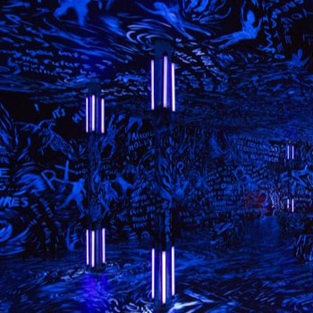
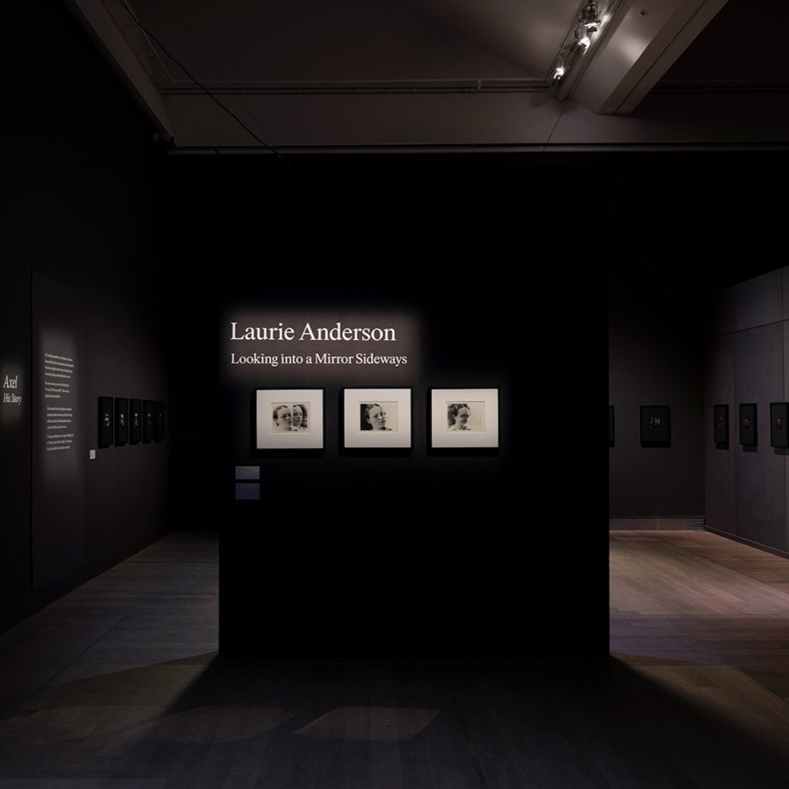

Acerca de Laurie
Aprende algo más sobre la artista Laurie Anderson

La galería
Explora la colección de obras de Laurie Anderson

Gestión de obras
Información sobre la gestión digital de las obras
Laurie Anderson
Aprende algo más sobre la artista Laurie Anderson

Explora la colección de obras de Laurie Anderson

Información sobre la gestión digital de las obras